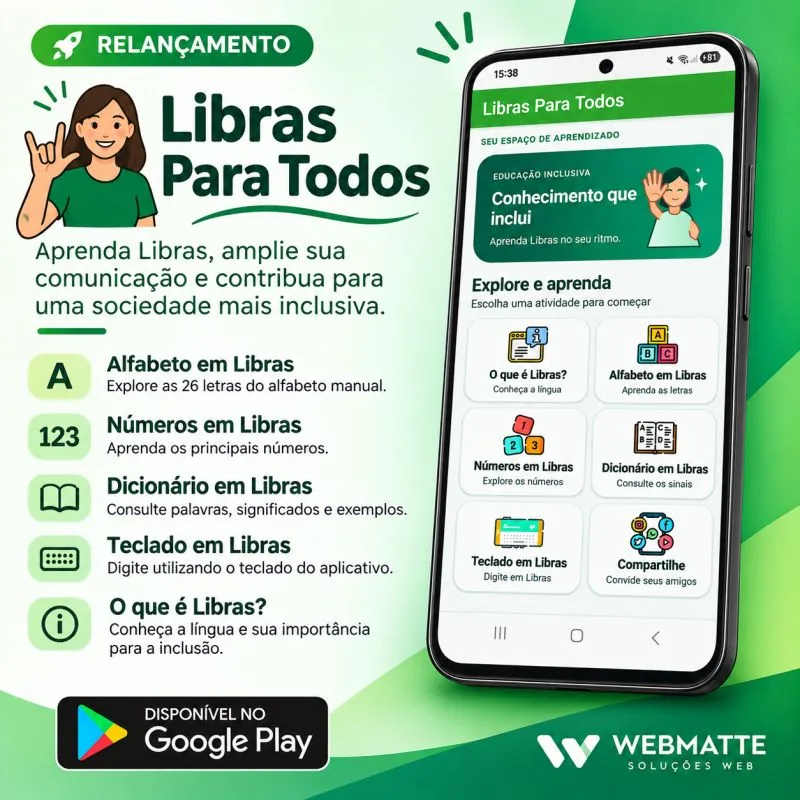

Comunicação sem barreiras
Atender, ensinar, cumprimentar ou simplesmente conversar com uma pessoa surda na língua dela muda tudo, para ambos os lados.
Três aplicativos, um mesmo propósito: aprender, praticar e incluir. Do alfabeto manual aos jogos com desafios, a Língua Brasileira de Sinais na palma da sua mão.
Uma língua completa, viva e brasileira, que conecta milhões de pessoas.
LIBRAS é a Língua Brasileira de Sinais, a língua usada pela comunidade surda no Brasil. Diferente das línguas orais, ela é visual-espacial: as mensagens são produzidas com as mãos, o rosto e o corpo, e compreendidas pela visão.
Não se trata de “português com as mãos”, nem de mímica. A LIBRAS tem vocabulário, gramática e estrutura próprios, com variações regionais, gírias e expressões, como qualquer outra língua.
Desde 2002, com a Lei nº 10.436, a LIBRAS é reconhecida oficialmente como meio legal de comunicação e expressão no país. O Decreto nº 5.626/2005 tornou seu ensino obrigatório na formação de professores e de fonoaudiólogos, e a Lei Brasileira de Inclusão (Lei nº 13.146/2015) reforçou o direito à acessibilidade na comunicação.
Uma das primeiras coisas que se aprende é o alfabeto manual (datilologia): um sinal para cada letra, usado para soletrar nomes próprios e palavras que ainda não têm sinal. É exatamente por aí que a nossa coleção começa.
Reconhecimento oficialA Lei 10.436 reconhece a LIBRAS como língua da comunidade surda brasileira.
Brasileiros com deficiência auditivaSegundo o Censo 2010 do IBGE, cerca de 9,7 milhões de pessoas declararam alguma deficiência auditiva.
Letras no alfabeto manualCada letra tem uma configuração de mão própria, a base para soletrar em LIBRAS.
Dia Nacional do SurdoData que celebra a cultura, a identidade e as conquistas da comunidade surda.
O formato que a mão assume ao fazer o sinal.
O lugar do corpo ou do espaço onde o sinal acontece.
Como a mão se desloca: direção, ritmo e intensidade.
Para onde a palma da mão está voltada.
Expressões faciais e corporais que mudam o sentido.
A barreira não está na surdez, e sim na falta de comunicação. Cada pessoa que aprende LIBRAS torna escolas, empresas, serviços e famílias mais acessíveis.
Atender, ensinar, cumprimentar ou simplesmente conversar com uma pessoa surda na língua dela muda tudo, para ambos os lados.
Escolas inclusivas, atendimento público acessível e respeito aos direitos garantidos por lei dependem de mais pessoas que dominem LIBRAS.
Saúde, educação, varejo, turismo e serviços valorizam quem atende com acessibilidade. LIBRAS no currículo abre portas.
Muitas crianças surdas nascem em famílias ouvintes. Aprender juntos fortalece vínculos desde os primeiros anos.
Aprender uma língua visual estimula memória, atenção, coordenação motora e percepção espacial em qualquer idade.
A LIBRAS carrega identidade, arte e história. Aprender é também reconhecer e valorizar essa comunidade.
“Mais educação, acessibilidade e inclusão para todos. Aprender LIBRAS é um gesto simples que abre um mundo inteiro de conversas.”
Coleção Aprenda LIBRAS · Webmatte
Conheça, pratique e jogue. Cada aplicativo cobre uma etapa do aprendizado e eles funcionam ainda melhor juntos.

Seu espaço de aprendizado em LIBRAS. Conheça a língua, aprenda no seu ritmo, amplie sua comunicação e contribua para uma sociedade mais inclusiva.
Embarque com o Gonzo em uma aventura divertida e educativa pelo mundo da LIBRAS. Aprender também pode ser uma grande aventura, para crianças, famílias e educadores.
Aprenda o alfabeto manual de LIBRAS de forma divertida, interativa e inclusiva. Forme palavras com os sinais, teste seus conhecimentos e acompanhe sua evolução.
Uma sequência simples para sair do zero e ganhar confiança, um sinal de cada vez.
Entenda o que é LIBRAS, aprenda o alfabeto manual, os números e consulte o dicionário no Libras Para Todos.
Libras Para Todos →Fixe as 26 letras formando palavras nos 4 níveis do Soletrando LIBRAS, mesmo sem internet.
Soletrando LIBRAS →Reforce tudo em uma aventura com o Gonzo: fases, desafios e estrelas para toda a família.
A Jornada de Gonzo →LIBRAS é a Língua Brasileira de Sinais, a língua de modalidade visual-espacial usada pela comunidade surda no Brasil. Ela tem gramática própria e foi reconhecida como meio legal de comunicação e expressão pela Lei nº 10.436/2002.
Não. LIBRAS é uma língua independente, com vocabulário, estrutura e regras gramaticais próprias. Ela usa configuração de mão, ponto de articulação, movimento, orientação da palma e expressões faciais e corporais para construir significado.
Não. Cada país tem sua própria língua de sinais. No Brasil é a LIBRAS; nos Estados Unidos, a ASL; em Portugal, a LGP. Também existem variações regionais dentro do Brasil.
Comece pelo Libras Para Todos para conhecer o alfabeto manual, os números e o dicionário. Depois pratique a soletração com o Soletrando LIBRAS e reforce o aprendizado brincando com A Jornada de Gonzo.
O Soletrando LIBRAS funciona totalmente offline, ideal para praticar em qualquer lugar. Consulte a página de cada app na Google Play para detalhes dos demais.
O alfabeto manual (datilologia) é a porta de entrada: serve para soletrar nomes e palavras sem sinal próprio. Para conversar com fluência, é preciso aprender os sinais, a gramática e conviver com a comunidade surda.
Baixe a Coleção Aprenda LIBRAS na Google Play e convide alguém para aprender com você.